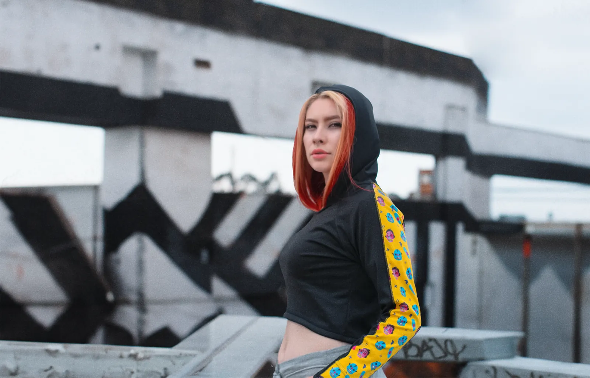
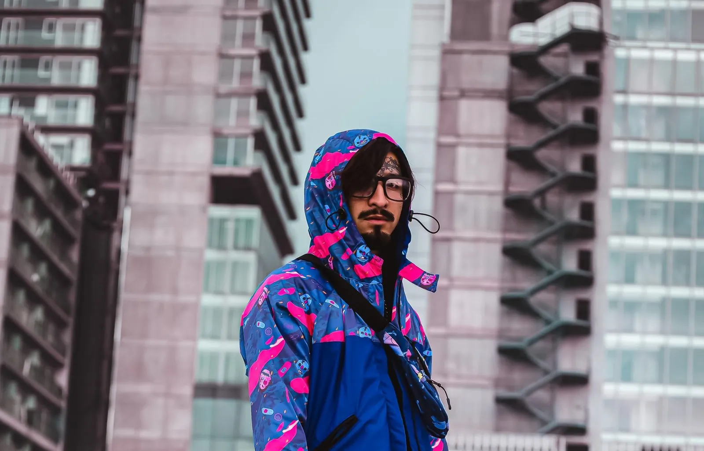
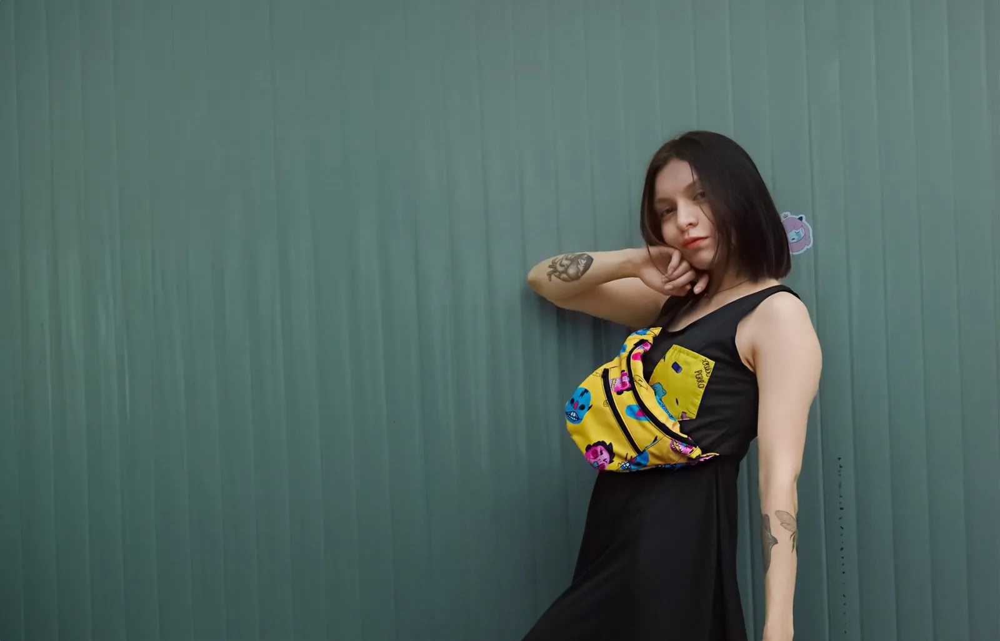

GATOZORRO
Una marca de ropa urbana que necesitaba verse tan inquieta como la gente que la usa. Construimos la identidad, el universo de patrones ilustrados y la imagen de lanzamiento.

- Cliente
- GATOZORRO
- Año
- 2024
- Rol
- Dirección creativa, ilustración y diseño
- Entregables
- Logotipo, patrones, fotografía de catálogo
El reto
GATOZORRO nació con prendas listas y sin una voz visual. La marca tenía que destacarse en un mercado de ropa urbana saturado de logotipos grandes y estampados genéricos.
La idea
Partimos del nombre: dos animales nocturnos, astutos y difíciles de atrapar. De ahí salió un símbolo de trazo cortante y una familia de patrones ilustrados que funcionan como estampado completo o como detalle en mangas, riñoneras y forros.
La fotografía llevó las prendas a la ciudad de noche y al concreto, con luz de color, para que el patrón fuera siempre el protagonista.



Resultado
Un sistema que la marca puede ampliar colección tras colección: el símbolo, la paleta y los patrones se combinan sin perder coherencia en etiquetas, redes y tienda.